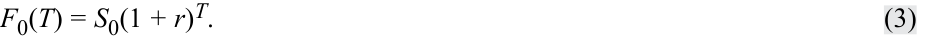
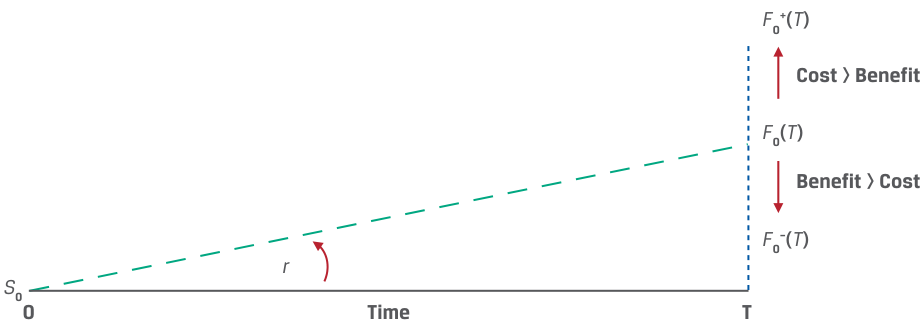
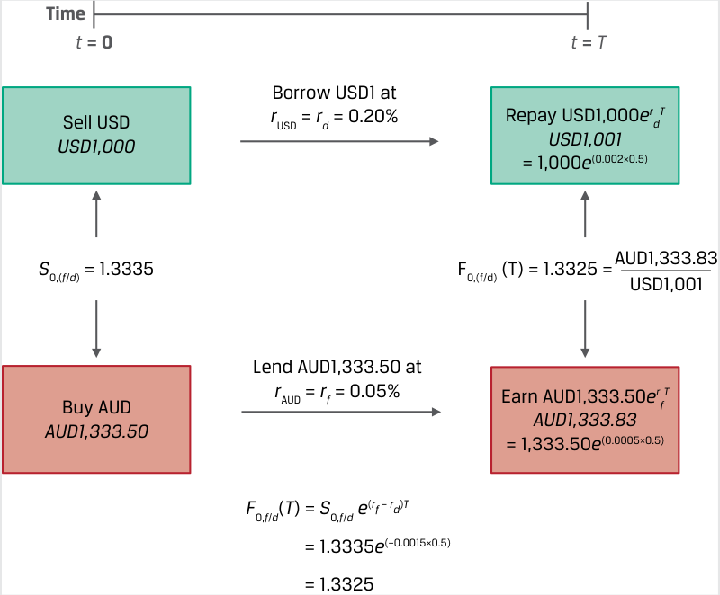
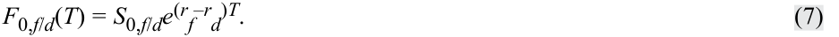

Learning Module 4 Arbitrage, Replication, and the Cost of Carry in Pricing Derivatives - Part 2: Costs and Benefits Associated with Owning the Underlying
Volume 7: Derivatives
Learning Module 4 Arbitrage, Replication, and the Cost of Carry in Pricing Derivatives
Part 2/2: Costs and Benefits Associated with Owning the Underlying (PDF Pages 96–106)
Tập 7: Công cụ Phái sinh (Derivatives)
Học phần 4: Kinh doanh Chênh lệch giá, Mô phỏng và Chi phí Lưu giữ trong Định giá Công cụ Phái sinh (Arbitrage, Replication, and the Cost of Carry in Pricing Derivatives)
Phần 2/2: Chi phí và Lợi ích Gắn liền với Việc Sở hữu Tài sản Cơ sở (Costs and Benefits Associated with Owning the Underlying) (Trang PDF 96–106)
- Describe the relationship between the spot and forward price for an underlying asset if the risk-free rate is negative.
- Solution:
- Hãy mô tả mối quan hệ giữa giá giao ngay và giá kỳ hạn đối với một tài sản cơ sở nếu lãi suất phi rủi ro mang giá trị âm.
- Lời giải:
The relationship between the spot and forward rate for an asset with no additional costs or benefits of ownership other than the opportunity cost (risk-free rate) is equal to F 0( T ) = S 0(1 + r )T . In a case where r < 0, (1 + r )T < 1 and therefore the forward price, F 0( T ), is below the spot price, S 0, if the risk-free rate is negative.
Mối quan hệ giữa giá giao ngay và giá kỳ hạn đối với một tài sản không có thêm chi phí hay lợi ích nào từ quyền sở hữu ngoài chi phí cơ hội (lãi suất phi rủi ro) được xác định bởi công thức $F_0(T) = S_0(1 + r)^T$. Trong trường hợp $r < 0$, ta có $(1 + r)^T < 1$ và do đó giá kỳ hạn, $F_0(T)$, sẽ thấp hơn giá giao ngay, $S_0$, nếu lãi suất phi rủi ro là số âm.
4
4
COSTS AND BENEFITS ASSOCIATED WITH OWNING THE UNDERLYING
CHI PHÍ VÀ LỢI ÍCH GẮN LIỀN VỚI VIỆC SỞ HỮU TÀI SẢN CƠ SỞ (COSTS AND BENEFITS ASSOCIATED WITH OWNING THE UNDERLYING)
explain the difference between the spot and expected future price of an underlying and the cost of carry associated with holding the underlying asset
Giải thích sự khác biệt giữa giá giao ngay và giá kỳ vọng trong tương lai của một tài sản cơ sở cùng với chi phí lưu giữ gắn liền với việc nắm giữ tài sản cơ sở đó.
In the prior lesson, replication was used to illustrate the basic relationship between entering into a spot transaction versus a forward commitment. The linkage between the spot price of an asset with no associated cash flows and a forward commitment on the same asset was shown to be the risk-free rate of interest, r . In this lesson, we discuss cost of carry as the net of the costs and benefits related to owning an underlying asset for a specific period.
Trong bài học trước, phương pháp mô phỏng (replication) đã được sử dụng để minh họa mối quan hệ cơ bản giữa việc tham gia vào một giao dịch giao ngay so với một cam kết kỳ hạn. Mối liên kết giữa giá giao ngay của một tài sản không có các dòng tiền đi kèm và một cam kết kỳ hạn trên cùng tài sản đó đã được chứng minh chính là lãi suất phi rủi ro, $r$. Trong bài học này, chúng ta thảo luận về chi phí lưu giữ (cost of carry) với tư cách là giá trị ròng của các chi phí và lợi ích liên quan đến việc sở hữu một tài sản cơ sở trong một khoảng thời gian cụ thể.
In the forward commitment example from the prior lesson, where no costs or benefits were associated with the underlying asset, the following relationship between the spot and forward prices was established:
Trong ví dụ về cam kết kỳ hạn từ bài học trước, nơi không có chi phí hay lợi ích nào gắn liền với tài sản cơ sở, mối quan hệ sau đây giữa giá giao ngay và giá kỳ hạn đã được thiết lập:

This relationship is shown under continuous compounding in Equation 4:
Mối quan hệ này được biểu diễn dưới dạng ghép lãi liên tục trong Phương trình 4:
- F 0( T ) = S 0 erT . ~~(4)~~
The risk-free rate, r , denotes the opportunity cost of holding (“ carrying ”) the asset, whether or not the long investor borrows to finance the asset. This opportunity cost is present for all asset classes discussed below.
Lãi suất phi rủi ro, $r$, biểu thị chi phí cơ hội (opportunity cost) của việc nắm giữ (“lưu giữ” – carrying) tài sản, bất kể nhà đầu tư nắm giữ vị thế mua có đi vay để tài trợ cho việc mua tài sản đó hay không. Chi phí cơ hội này hiện diện đối với tất cả các loại tài sản được thảo luận dưới đây.
Equations 3 and 4 represent the special case of an underlying asset with no additional associated cash flows. However, many assets have additional costs or benefits of ownership that must be reflected in the forward commitment price in order to prevent riskless arbitrage opportunities from arising between underlying spot and derivative prices. Exhibit 7 demonstrates the effect of costs and benefits (usually dividend or interest income) on the spot price, forward commitment price, and risk-free rate relationships.
Phương trình 3 và 4 đại diện cho trường hợp đặc biệt của một tài sản cơ sở không có thêm các dòng tiền đi kèm. Tuy nhiên, nhiều tài sản có thêm các chi phí hoặc lợi ích từ quyền sở hữu mà bắt buộc phải được phản ánh vào mức giá cam kết kỳ hạn nhằm ngăn chặn các cơ hội kinh doanh chênh lệch giá phi rủi ro phát sinh giữa giá giao ngay của tài sản cơ sở và giá công cụ phái sinh. Bảng minh họa 7 minh họa tác động của các chi phí và lợi ích (thường là thu nhập cổ tức hoặc tiền lãi) lên mối quan hệ giữa giá giao ngay, giá cam kết kỳ hạn và lãi suất phi rủi ro.
Exhibit 7: Spot Prices, Forward Commitment Prices, and the Risk-Free Rate with Underlying Asset Costs and Benefits
Bảng minh họa 7: Giá Giao ngay, Giá Cam kết Kỳ hạn và Lãi suất Phi rủi ro khi Tài sản Cơ sở có Chi phí và Lợi ích (Spot Prices, Forward Commitment Prices, and the Risk-Free Rate with Underlying Asset Costs and Benefits)

Chú thích hình ảnh: Xuất phát từ mức giá giao ngay $S_0$ tại thời điểm $0$ đến thời điểm $T$: - Đường cơ sở (chỉ có lãi suất phi rủi ro $r$): tiến tới $F_0(T)$. - Khi Chi phí $>$ Lợi ích (Cost > Benefit): đường giá kỳ hạn dịch chuyển lên cao hơn tới mức $F_0^+(T)$. - Khi Lợi ích $>$ Chi phí (Benefit > Cost): đường giá kỳ hạn dịch chuyển xuống thấp hơn tới mức $F_0^-(T)$.
If an underlying asset owner incurs costs in addition to the opportunity cost, she should expect to be compensated for these added costs through a higher forward price, F 0+ ( T ). Income or other benefits accrue to the underlying asset owner and therefore should reduce the forward price to F 0– ( T ).
Nếu người sở hữu tài sản cơ sở phải chịu thêm các khoản chi phí ngoài chi phí cơ hội, người đó sẽ kỳ vọng được đền bù cho những chi phí tăng thêm này thông qua một mức giá kỳ hạn cao hơn, $F_0^+(T)$. Thu nhập hoặc các lợi ích khác thuộc về người sở hữu tài sản cơ sở và do đó sẽ làm giảm mức giá kỳ hạn xuống còn $F_0^-(T)$.
For underlying assets with ownership benefits or income ( I ) or costs ( C ) expressed as a known amount in present value terms at t = 0 —shown as PV0()—the relationship between spot and forward prices in discrete compounding terms can be shown as
Đối với các tài sản cơ sở có lợi ích hoặc thu nhập từ quyền sở hữu ($I$) hoặc chi phí ($C$) được biểu thị dưới dạng một số tiền đã biết tính theo giá trị hiện tại tại thời điểm $t = 0$ — ký hiệu là $\text{PV}_0()$ — mối quan hệ giữa giá giao ngay và giá kỳ hạn theo phương pháp ghép lãi rời rạc có thể được biểu diễn như sau:
F 0( T ) = [ S 0 – PV0( I ) + PV0( C )](1 + r )T . ~~(5)~~
In other instances, the additional costs or benefits are expressed as a rate of return over the life of the contract. For income ( i ) and cost ( c ) expressed as rates of return, the relationship between spot and forward prices under continuous compounding is
Trong các trường hợp khác, những chi phí hoặc lợi ích bổ sung được biểu thị dưới dạng một tỷ suất sinh lợi (rate of return) trong suốt vòng đời của hợp đồng. Đối với tỷ suất thu nhập ($i$) và tỷ suất chi phí ($c$) được biểu thị dưới dạng tỷ lệ phần trăm, mối quan hệ giữa giá giao ngay và giá kỳ hạn theo phương pháp ghép lãi liên tục là:
F 0( T ) = S 0 e(r+c–i)T . ~~(6)~~
Whether expressed as a known amount in present value terms or as a rate of return, the forward price must incorporate the net effect of all costs and benefits associated with owning the underlying asset, including the following.
Cho dù được biểu thị dưới dạng một số tiền đã biết tính theo giá trị hiện tại hay dưới dạng một tỷ suất sinh lợi, giá kỳ hạn bắt buộc phải kết hợp tác động ròng của tất cả các chi phí và lợi ích gắn liền với việc sở hữu tài sản cơ sở, bao gồm những yếu tố sau đây:
-
Opportunity cost (risk-free interest rate, r ): A positive risk-free rate causes a forward price to be greater than the underlying spot price, all else equal, and the higher the risk-free rate, the greater the positive difference between the two. This opportunity cost applies to any asset.
-
Other costs of ownership ( C , c ) : Owners of some underlying assets, such as physical commodities, must incur storage, transportation, insurance, and/or spoilage costs. An owner entering a contract for future delivery will expect to be compensated for these costs, resulting in a forward price that is therefore greater than the underlying spot price, all else equal.
-
Benefits of ownership ( I , i ): Alternatively, the owners of some underlying assets enjoy cash flow or other benefits associated with owning the underlying asset as opposed to a derivative on the asset. A counterparty entering a derivative contract for future delivery of an underlying asset forgoes these benefits and will therefore reduce the forward price by this amount. Stock dividends or bond coupons are examples of cash flow benefits.
-
Chi phí cơ hội (lãi suất phi rủi ro, $r$): Một mức lãi suất phi rủi ro dương làm cho giá kỳ hạn lớn hơn giá giao ngay của tài sản cơ sở, khi các yếu tố khác không đổi (all else equal), và lãi suất phi rủi ro càng cao thì khoản chênh lệch dương giữa hai mức giá càng lớn. Chi phí cơ hội này áp dụng cho bất kỳ tài sản nào.
-
Các chi phí sở hữu khác ($C$, $c$): Người sở hữu một số tài sản cơ sở, chẳng hạn như hàng hóa vật chất, phải gánh chịu các chi phí lưu kho (storage), vận chuyển (transportation), bảo hiểm (insurance), và/hoặc hư hỏng (spoilage). Một người sở hữu tham gia vào hợp đồng giao hàng trong tương lai sẽ kỳ vọng được đền bù cho những chi phí này, dẫn đến một mức giá kỳ hạn lớn hơn giá giao ngay của tài sản cơ sở, khi các yếu tố khác không đổi.
-
Lợi ích của quyền sở hữu ($I$, $i$): Ngược lại, người sở hữu một số tài sản cơ sở được hưởng dòng tiền hoặc các lợi ích khác gắn liền với việc trực tiếp sở hữu tài sản cơ sở đó so với việc nắm giữ một công cụ phái sinh trên tài sản đó. Một đối tác tham gia vào hợp đồng phái sinh để nhận giao hàng tài sản cơ sở trong tương lai sẽ từ bỏ những lợi ích này và do đó sẽ giảm mức giá kỳ hạn đi một lượng tương ứng. Cổ tức cổ phiếu (stock dividends) hoặc lãi trái phiếu định kỳ (bond coupons) là những ví dụ về lợi ích dòng tiền.
Exhibit 8 illustrates the relationship between forward and spot prices in the presence of costs and benefits. For example, when the opportunity cost and other costs of ownership exceed the benefits, the forward price will be above the underlying spot asset price.
Bảng minh họa 8 minh họa mối quan hệ giữa giá kỳ hạn và giá giao ngay khi có sự hiện diện của các chi phí và lợi ích. Ví dụ, khi chi phí cơ hội và các chi phí sở hữu khác vượt quá lợi ích, giá kỳ hạn sẽ nằm trên mức giá giao ngay của tài sản cơ sở.
Exhibit 8: Forward vs. Spot Price
Bảng minh họa 8: Giá Kỳ hạn so với Giá Giao ngay (Forward vs. Spot Price)
| Cost vs. Benefit | Forward vs. Spot Price |
|---|---|
| Opportunity and Other Cost > Benefit | F_0(_T) >_S_0 |
| i Opportunity and Other Cost < Benefit |
F_0(_T) <_S_0 |
| Opportunity and Other Cost = Benefit | F_0(_T) =_S_0 |
| Chi phí so với Lợi ích (Cost vs. Benefit) | Giá Kỳ hạn so với Giá Giao ngay (Forward vs. Spot Price) |
|---|---|
| Chi phí Cơ hội và Chi phí Khác $>$ Lợi ích | $F_0(T) > S_0$ |
| Chi phí Cơ hội và Chi phí Khác $<$ Lợi ích | $F_0(T) < S_0$ |
| Chi phí Cơ hội và Chi phí Khác $=$ Lợi ích | $F_0(T) = S_0$ |
Each underlying asset type has different costs and benefits, which may vary over time and across markets. For example, owners of some individual equity securities receive the benefit of regular stock dividends, as in Example 4, while others do not. For equity indexes, the benefit is usually expressed as a rate of return, as shown in Example 5.
Mỗi loại tài sản cơ sở có những chi phí và lợi ích khác nhau, có thể thay đổi theo thời gian và giữa các thị trường. Ví dụ, người sở hữu một số chứng khoán vốn cổ phần riêng lẻ nhận được lợi ích từ cổ tức cổ phiếu định kỳ, như trong Ví dụ 4, trong khi những cổ phiếu khác thì không. Đối với các chỉ số cổ phiếu (equity indexes), lợi ích thường được biểu thị dưới dạng một tỷ suất sinh lợi (tỷ suất cổ tức), như được thể hiện trong Ví dụ 5.
EXAMPLE 4
VÍ DỤ 4 (EXAMPLE 4)
Hightest Equity Forward with Dividend
Hợp đồng Kỳ hạn Cổ phiếu có Cổ tức của Hightest (Hightest Equity Forward with Dividend)
Assume Hightest Capital agrees to deliver 1,000 Unilever (UL) shares at an agreed-upon price to a financial intermediary in six months under a forward contract. Assume that UL has a spot price ( S 0) of EUR50 and pays no dividend ( I = 0), and assume a risk-free rate ( r ) of 5%. We may use Equation 3 to solve for the forward price, F 0( T ), in six months:
Giả sử Hightest Capital đồng ý chuyển giao $1,000$ cổ phiếu Unilever (UL) tại một mức giá thỏa thuận trước cho một định chế tài chính trung gian sau sáu tháng theo một hợp đồng kỳ hạn. Giả sử UL có giá giao ngay ($S_0$) là $\text{EUR}50$ và không trả cổ tức ($I = 0$), đồng thời giả sử lãi suất phi rủi ro ($r$) là $5\%$. Chúng ta có thể sử dụng Phương trình 3 để giải tìm giá kỳ hạn, $F_0(T)$, sau sáu tháng:
F 0( T ) = S 0(1 + r )T .
EUR51.23 = EUR50(1.05)0.5 .
Now assume instead that Unilever pays a quarterly dividend of EUR0.30, which occurs in exactly three months and again at time T , with other details unchanged. Use Equation 5 with PV0( C ) = 0 to solve for F 0( T ) in six months:
Bây giờ, giả sử thay vào đó Unilever trả cổ tức hàng quý là $\text{EUR}0.30$, diễn ra sau đúng ba tháng nữa và một lần nữa tại thời điểm $T$, với các thông tin chi tiết khác giữ nguyên không đổi. Sử dụng Phương trình 5 với $\text{PV}_0(C) = 0$ để giải tìm $F_0(T)$ sau sáu tháng:
F 0( T ) = [ S 0 – PV0( I )](1 + r )T .
First, solve for the present value of the dividend per share, PV0( I ), as follows:
Trước tiên, giải tìm giá trị hiện tại của cổ tức trên mỗi cổ phiếu, $\text{PV}_0(I)$, như sau:
PV0( I ) = EUR0.30(1.05)–0.25 + EUR0.30(1.05)–0.5 .
EUR0.5892 = 0.2964 + 0.2928.
Substitute PV0( I ) = EUR0.5892 into Equation 5 to solve for F 0( T ):
Thay $\text{PV}_0(I) = \text{EUR}0.5892$ vào Phương trình 5 để giải tìm $F_0(T)$:
F 0( T ) = (EUR50 – EUR0.5892)(1.05)0.5
= EUR50.6310.
Hightest’s forward contract for 1,000 UL shares would therefore be priced at EUR50,631.00 (= 1,000 × EUR50.6310). The opportunity cost of borrowing at the risk-free rate is EUR1.23 per share for six months and equals F 0( T ) – S 0 when Unilever pays no dividend. A EUR0.30 quarterly dividend reduces the difference between the forward and spot price to approximately EUR0.63.
Do đó, hợp đồng kỳ hạn của Hightest đối với $1,000$ cổ phiếu UL sẽ được định giá ở mức $\text{EUR}50,631.00$ ($= 1,000 \times \text{EUR}50.6310$). Chi phí cơ hội của việc đi vay ở mức lãi suất phi rủi ro là $\text{EUR}1.23$ trên mỗi cổ phiếu trong sáu tháng và bằng $F_0(T) - S_0$ khi Unilever không trả cổ tức. Khoản cổ tức hàng quý $\text{EUR}0.30$ làm giảm mức chênh lệch giữa giá kỳ hạn và giá giao ngay xuống còn xấp xỉ $\text{EUR}0.63$.
EXAMPLE 5
VÍ DỤ 5 (EXAMPLE 5)
Stock Index Futures with Dividend Yield
Hợp đồng Tương lai Chỉ số Cổ phiếu có Tỷ suất Cổ tức (Stock Index Futures with Dividend Yield)
The Viswan Family Office (VFO) would like to enter into a three-month forward commitment contract to purchase the NIFTY 50 benchmark Indian stock market index traded on the National Stock Exchange. The spot NIFTY 50 index price is INR15,200, the index dividend yield is 2.2%, and the Indian rupee risk-free rate is 4%. Use Equation 6 (with c = 0) to solve for the forward price:
Văn phòng Quản lý Tài sản Gia đình Viswan (VFO) muốn tham gia vào một hợp đồng cam kết kỳ hạn ba tháng để mua chỉ số thị trường chứng khoán Ấn Độ chuẩn NIFTY 50 được giao dịch trên Sở Giao dịch Chứng khoán Quốc gia (National Stock Exchange). Mức giá giao ngay của chỉ số NIFTY 50 là $\text{INR}15,200$, tỷ suất cổ tức của chỉ số (index dividend yield) là $2.2\%$, và lãi suất phi rủi ro của đồng rupee Ấn Độ là $4\%$. Sử dụng Phương trình 6 (với $c = 0$) để giải tìm mức giá kỳ hạn:
F 0( T ) = S 0 e(r+c–i)T = 15,200 e(0.04 – 0.022)0.25 = INR15,268.55.
Foreign exchange requires some adjustments to establish the no-arbitrage condition between spot and forward prices, as shown in the prior lesson. First, it is important to distinguish the “price” of the underlying asset, which for equities, fixed income, or commodities refers to units of currency for each asset—for example, one share of stock or the principal amount for a bond. In contrast, the foreign exchange rate is expressed as a spot rate ( S 0, f / d ) specifying the number of units of a price currency (here denoted as f or foreign currency) in the numerator per single unit of a base currency (here shown as d or domestic currency) in the denominator. For example, for a USD/ EUR spot rate ( S 0, f / d ) of 1.20, the US dollar is the price currency ( f ), and the euro is the base currency ( d ), with USD1.20 equal to EUR1.
Ngoại hối (foreign exchange – FX) đòi hỏi một số điều chỉnh để thiết lập điều kiện không có kinh doanh chênh lệch giá giữa giá giao ngay và giá kỳ hạn, như đã trình bày trong bài học trước. Trước hết, điều quan trọng là phải phân biệt “mức giá” của tài sản cơ sở: đối với cổ phiếu, thu nhập cố định hoặc hàng hóa, giá đề cập đến số đơn vị tiền tệ cho mỗi tài sản — ví dụ, một cổ phiếu hoặc số tiền gốc của một trái phiếu. Ngược lại, tỷ giá hối đoái được biểu thị dưới dạng một tỷ giá giao ngay ($S_{0,f/d}$) quy định số đơn vị của đồng tiền định giá (price currency — ở đây ký hiệu là $f$ hay đồng ngoại tệ) ở tử số trên một đơn vị của đồng tiền yết giá / đồng tiền cơ sở (base currency — ở đây ký hiệu là $d$ hay đồng nội tệ) ở mẫu số. Ví dụ, đối với tỷ giá giao ngay USD/EUR ($S_{0,f/d}$) là $1.20$, đồng đô la Mỹ là đồng tiền định giá ($f$), và đồng euro là đồng tiền cơ sở ($d$), với $\text{USD}1.20$ đổi được $\text{EUR}1$.
An FX (foreign exchange) forward contract involves the sale of one currency and purchase of the other on a future date at a forward price ( F 0, f / d ) agreed on at inception. A long FX forward position involves the purchase of the base currency and the sale of the price currency. For example, a long USD/EUR FX forward position is the sale of US dollars and purchase of euros at a forward rate.
Một hợp đồng kỳ hạn ngoại hối (FX forward contract) bao gồm việc bán một đồng tiền này và mua một đồng tiền khác vào một ngày trong tương lai tại mức giá kỳ hạn ($F_{0,f/d}$) được thỏa thuận ngay từ khi khởi tạo. Một vị thế mua kỳ hạn ngoại hối (long FX forward position) bao gồm việc mua đồng tiền cơ sở (base currency) và bán đồng tiền định giá (price currency). Ví dụ, một vị thế mua kỳ hạn ngoại hối USD/EUR là việc bán đô la Mỹ và mua đồng euro tại một mức tỷ giá kỳ hạn.
In the prior replication example, the derivative cash flow stream was recreated by combining a long or short position in an underlying asset and borrowing or lending cash. Here the foreign and domestic currency each has an opportunity cost—namely, the foreign risk-free rate ( rf ) and the domestic risk-free rate ( rd ), respectively.
Trong ví dụ mô phỏng trước đó, chuỗi dòng tiền của công cụ phái sinh được tái tạo bằng cách kết hợp một vị thế mua hoặc bán đối với một tài sản cơ sở cùng với việc đi vay hoặc cho vay tiền mặt. Ở đây, mỗi đồng ngoại tệ và đồng nội tệ đều có một chi phí cơ hội riêng — cụ thể là lãi suất phi rủi ro của đồng ngoại tệ ($r_f$) và lãi suất phi rủi ro của đồng nội tệ ($r_d$) tương ứng.
EXAMPLE 6
VÍ DỤ 6 (EXAMPLE 6)
AUD/USD Foreign Exchange Forward Replication
Mô phỏng Hợp đồng Kỳ hạn Ngoại hối AUD/USD (AUD/USD Foreign Exchange Forward Replication)
In order to replicate one currency’s return in terms of the other for a given spot price today of S 0, f / d , we may solve for a forward rate F 0, f / d ( T ) using the earlier arbitrage concept that assets with a known future price must have a spot price ( S 0, f / d ) equal to the future price discounted at the risk-free rate.
Để mô phỏng mức sinh lợi của một đồng tiền tính theo đồng tiền kia đối với một mức giá giao ngay cho trước ngày hôm nay là $S_{0,f/d}$, chúng ta có thể giải tìm tỷ giá kỳ hạn $F_{0,f/d}(T)$ bằng cách sử dụng khái niệm kinh doanh chênh lệch giá trước đó rằng các tài sản có mức giá tương lai đã biết phải có giá giao ngay ($S_{0,f/d}$) bằng với mức giá tương lai được chiết khấu theo lãi suất phi rủi ro.
Assume the current AUD/USD spot price is 1.3335. The Australian dollar is the price currency or foreign currency, and the US dollar is the base or domestic currency (AUD1.3335 = USD1). The six-month Australian dollar risk-free rate is 0.05%, and the six-month US dollar risk-free rate is 0.20%.
Giả sử tỷ giá giao ngay AUD/USD hiện tại là $1.3335$. Đồng đô la Úc (AUD) là đồng tiền định giá hay ngoại tệ ($f$), và đồng đô la Mỹ (USD) là đồng tiền cơ sở hay nội tệ ($d$) ($\text{AUD}1.3335 = \text{USD}1$). Lãi suất phi rủi ro sáu tháng của đồng đô la Úc là $0.05\%$, và lãi suất phi rủi ro sáu tháng của đồng đô la Mỹ là $0.20\%$.
- At time t = 0:
- Tại thời điểm $t = 0$:
1. Borrow USD1,000 at the 0.20% US dollar risk-free rate for six months.
1. Vay $\text{USD}1,000$ tại mức lãi suất phi rủi ro của đồng đô la Mỹ là $0.20\%$ trong sáu tháng.
2. Purchase AUD1,333.50 at the AUD/USD spot rate ( S 0, f / d = 1.3335).
2. Mua $\text{AUD}1,333.50$ tại mức tỷ giá giao ngay AUD/USD ($S_{0,f/d} = 1.3335$).
3. Lend the AUD1,333.50 received at the 0.05% Australian dollar riskfree rate for six months.
3. Cho vay số tiền $\text{AUD}1,333.50$ nhận được tại mức lãi suất phi rủi ro của đồng đô la Úc là $0.05\%$ trong sáu tháng.
- At time t = T in six months:
- Tại thời điểm $t = T$ sau sáu tháng:
4. Receive Australian dollar loan proceeds of 1,333.83 (= 1,333.50 e(0.0005 × 0.5) ).
4. Nhận số tiền thu hồi từ khoản cho vay bằng đô la Úc là $1,333.83$ ($= 1,333.50 e^{(0.0005 \times 0.5)}$).
5. Exchange Australian dollar proceeds for US dollars at ST , f / d to repay the US dollar loan.
5. Đổi số tiền đô la Úc thu được sang đô la Mỹ tại mức tỷ giá $S_{T,f/d}$ để hoàn trả khoản vay đô la Mỹ.
6. Repay the US dollar loan (with interest) of 1,001 (= 1,000 e(0.002 × 0.5)).
6. Hoàn trả khoản vay đô la Mỹ (kèm tiền lãi) là $1,001$ ($= 1,000 e^{(0.002 \times 0.5)}$).
If the exchange in Step 5 at time T is at a spot price, ST , f / d , at which the Australian dollar loan proceeds (Step 4) exactly offset the US dollar loan (Step 6), no riskless arbitrage opportunity exists. Solve for ST , f / d by dividing the Australian dollars in Step 4 by the US dollars in Step 6:
Nếu giao dịch chuyển đổi ở Bước 5 tại thời điểm $T$ diễn ra ở một mức giá giao ngay, $S_{T,f/d}$, mà tại đó số tiền thu được từ khoản cho vay đô la Úc (Bước 4) bù trừ chính xác cho khoản vay đô la Mỹ (Bước 6), thì sẽ không tồn tại cơ hội kinh doanh chênh lệch giá phi rủi ro. Giải tìm $S_{T,f/d}$ bằng cách lấy số đô la Úc ở Bước 4 chia cho số đô la Mỹ ở Bước 6:
ST , f / d = 1.3325 (= AUD1,333.83/USD1,001).
The following diagram summarizes the cash flows at time t = 0 and time T :
Sơ đồ dưới đây tóm tắt các dòng tiền tại thời điểm $t = 0$ và thời điểm $T$:

Chú thích hình ảnh: - Thời điểm $t = 0$: - Bán USD ($\text{USD}1,000$): Đi vay theo lãi suất $r_{\text{USD}} = r_d = 0.20\%$. - Tỷ giá giao ngay $S_{0,(f/d)} = 1.3335$. - Mua AUD ($\text{AUD}1,333.50$): Cho vay $\text{AUD}1,333.50$ theo lãi suất $r_{\text{AUD}} = r_f = 0.05\%$. - Thời điểm $t = T$: - Hoàn trả khoản vay USD: $\text{USD}1,000 e^{r_d T} = 1,000 e^{(0.002 \times 0.5)} = \text{USD}1,001$. - Thu về khoản cho vay AUD: $\text{AUD}1,333.50 e^{r_f T} = 1,333.50 e^{(0.0005 \times 0.5)} = \text{AUD}1,333.83$. - Tỷ giá kỳ hạn: $F_{0,(f/d)}(T) = 1.3325 = \frac{\text{AUD}1,333.83}{\text{USD}1,001}$, tức là $F_{0,f/d}(T) = S_{0,f/d} e^{(r_f - r_d)T} = 1.3335 e^{(-0.0015 \times 0.5)} = 1.3325$.
For the no-arbitrage condition to hold between the FX spot and forward price, the amount of Australian dollars necessary to purchase USD1 at time T ( F 0, f / d ( T )) must have a spot price ( S 0, f / d ) equal to the discounted future price. The relevant discount rate here involves the difference between the foreign and domestic risk-free rates, as shown in the following modified version of Equation 4:
Để điều kiện không có kinh doanh chênh lệch giá được đảm bảo giữa giá giao ngay và giá kỳ hạn ngoại hối, số lượng đô la Úc cần thiết để mua $\text{USD}1$ tại thời điểm $T$ ($F_{0,f/d}(T)$) phải có mức giá giao ngay ($S_{0,f/d}$) bằng với mức giá tương lai đã chiết khấu. Lãi suất chiết khấu phù hợp ở đây liên quan đến mức chênh lệch giữa lãi suất phi rủi ro của đồng ngoại tệ và đồng nội tệ, như được thể hiện trong phiên bản điều chỉnh sau đây của Phương trình 4:

Solve for F 0, AUD / USD ( T ) in Example 6 as follows: F 0, f / d ( T ) = 1.3325 (= 1.3335 e(–0.0015 × 0.5) ).
Giải tìm $F_{0,\text{AUD/USD}}(T)$ trong Ví dụ 6 như sau: $F_{0,f/d}(T) = 1.3325$ ($= 1.3335 e^{(-0.0015 \times 0.5)}$).
From Equation 7, we see that it is the risk-free interest rate differential ( rf – rd ), rather than the absolute level of interest rates, that determines the spot versus forward FX price relationship. For example, in Example 6, the Australian dollar risk-free rate is 0.15% below the US dollar rate ( rf – rd < 0). Borrowing at the higher US dollar rate and lending at the lower Australian dollar rate results in a no-arbitrage forward price at which fewer Australian dollars are required to purchase USD1 in the future, so the Australian dollar is said to trade at a premium in the forward market versus the US dollar. Exhibit 9 summarizes the relationship between forward and spot FX prices.
Từ Phương trình 7, chúng ta thấy rằng chính mức chênh lệch lãi suất phi rủi ro ($r_f - r_d$), chứ không phải mức lãi suất tuyệt đối, mới là yếu tố quyết định mối quan hệ giữa giá ngoại hối giao ngay và kỳ hạn. Ví dụ, trong Ví dụ 6, lãi suất phi rủi ro của đồng đô la Úc thấp hơn $0.15\%$ so với lãi suất của đồng đô la Mỹ ($r_f - r_d < 0$). Việc đi vay ở mức lãi suất đô la Mỹ cao hơn và cho vay ở mức lãi suất đô la Úc thấp hơn dẫn đến một mức giá kỳ hạn không có kinh doanh chênh lệch giá mà tại đó cần ít đô la Úc hơn để mua $\text{USD}1$ trong tương lai, vì vậy đồng đô la Úc được gọi là giao dịch ở mức gia tăng (at a premium — thặng dư/cao giá kỳ hạn) trên thị trường kỳ hạn so với đồng đô la Mỹ. Bảng minh họa 9 tóm tắt mối quan hệ giữa giá ngoại hối kỳ hạn và giao ngay.
Exhibit 9: FX Forward vs. Spot Price Relationship
Bảng minh họa 9: Mối quan hệ giữa Giá Kỳ hạn và Giá Giao ngay Ngoại hối (FX Forward vs. Spot Price Relationship)
| Interest Rate Differential |
Forward vs. Spot Price |
Foreign Currency Forward |
FX Forward Premium/ Discount |
|---|---|---|---|
| (rf–rd) > 0 | F_0,_f/d(T) >S_0,_f/d | Discount | Premium |
| (rf–rd) < 0 | F_0,_f/d(T) <S_0,_f/d | Premium | Discount |
| (rf–rd) = 0 | F_0,_f/d(T) =S_0,_f/d | Neither a premium nor a discount |
Neither a premium nor a discount |
| Chênh lệch Lãi suất (Interest Rate Differential) | Giá Kỳ hạn so với Giá Giao ngay (Forward vs. Spot Price) | Kỳ hạn Đồng Ngoại tệ / Đồng Định giá (Foreign Currency Forward) | Phần bù / Chiết khấu Kỳ hạn FX (của Đồng Cơ sở) (FX Forward Premium/Discount) |
|---|---|---|---|
| $(r_f - r_d) > 0$ | $F_{0,f/d}(T) > S_{0,f/d}$ | Chiết khấu (Discount) | Phần bù / Gia tăng (Premium) |
| $(r_f - r_d) < 0$ | $F_{0,f/d}(T) < S_{0,f/d}$ | Phần bù / Gia tăng (Premium) | Chiết khấu (Discount) |
| $(r_f - r_d) = 0$ | $F_{0,f/d}(T) = S_{0,f/d}$ | Không gia tăng cũng không chiết khấu (Neither a premium nor a discount) | Không gia tăng cũng không chiết khấu (Neither a premium nor a discount) |
We now examine this FX spot versus forward relationship in the case of the Montau AG example from an earlier lesson.
Bây giờ chúng ta xem xét mối quan hệ giữa giá giao ngay và giá kỳ hạn ngoại hối này trong trường hợp ví dụ về công ty Montau AG từ bài học trước.
EXAMPLE 7
VÍ DỤ 7 (EXAMPLE 7)
Montau AG’s FX Forward Rate
Tỷ giá Kỳ hạn Ngoại hối của Montau AG (Montau AG’s FX Forward Rate)
An earlier lesson introduced Montau AG, a German capital goods producer. Montau signs a commercial contract with Jeon, Inc., a South Korean manufacturer, to deliver a laser cutting machine at a price of KRW650 million in 75 days. Montau faces a timing mismatch between domestic euro costs incurred and euro revenue realized upon the delivery of the machine and sale of South Korean won received in exchange for euros in the spot FX market. Montau enters a long KRW/EUR FX forward contract. That is, Montau agrees to sell South Korean won and purchase euros at a fixed price, F 0( T ), in 75 days to eliminate the KRW/EUR exchange rate mismatch arising from the export contract.
Một bài học trước đã giới thiệu Montau AG, một nhà sản xuất tư liệu sản xuất của Đức. Montau ký một hợp đồng thương mại với Jeon, Inc., một nhà sản xuất Hàn Quốc, để giao một máy cắt laser với mức giá $\text{KRW}650\text{ triệu}$ sau $75\text{ ngày}$. Montau phải đối mặt với sự lệch pha về mặt thời gian giữa các chi phí phát sinh bằng đồng nội tệ euro và doanh thu bằng đồng euro được hiện thực hóa khi bàn giao máy và bán số đồng won Hàn Quốc nhận được để đổi lấy đồng euro trên thị trường ngoại hối giao ngay. Montau tham gia vào một hợp đồng mua kỳ hạn ngoại hối KRW/EUR (long KRW/EUR FX forward contract). Nghĩa là, Montau đồng ý bán đồng won Hàn Quốc và mua đồng euro tại một mức giá cố định, $F_0(T)$, sau $75\text{ ngày}$ nhằm loại bỏ sự lệch pha tỷ giá hối đoái KRW/EUR phát sinh từ hợp đồng xuất khẩu.
In this version of the Montau AG example, we use today’s spot exchange rate and the domestic ( rd ) and foreign ( rf ) risk-free rates to solve for the KRW/EUR forward rate. As seen in Equation 7, the difference between spot and forward FX rates involves the difference in risk-free rates. In the KRW/EUR case, the South Korean won is the price currency or foreign currency and rf is therefore the South Korean won interest rate. The euro is the base or domestic currency. We may therefore rewrite Equation 7 as follows:
Trong phiên bản này của ví dụ về Montau AG, chúng ta sử dụng tỷ giá hối đoái giao ngay ngày hôm nay cùng với lãi suất phi rủi ro của đồng nội tệ ($r_d$) và đồng ngoại tệ ($r_f$) để giải tìm tỷ giá kỳ hạn KRW/EUR. Như đã thấy trong Phương trình 7, sự khác biệt giữa tỷ giá ngoại hối giao ngay và kỳ hạn liên quan đến mức chênh lệch trong lãi suất phi rủi ro. Trong trường hợp KRW/EUR, đồng won Hàn Quốc là đồng tiền định giá hay ngoại tệ và do đó $r_f$ là lãi suất đồng won Hàn Quốc. Đồng euro là đồng tiền cơ sở hay nội tệ. Do đó, chúng ta có thể viết lại Phương trình 7 như sau:
F 0, KRW / EUR ( T ) = S 0, KRW / EURe(r KRW–r EUR)T .
Assume a spot KRW/EUR rate ( S 0) of 1,300 (that is, KRW1,300 = EUR1), a South Korean won risk-free rate of 0.75%, and a euro risk-free rate of –0.25% ( rd ). Calculate the KRW/EUR forward rate in 75 days consistent with no arbitrage.
Giả sử tỷ giá giao ngay KRW/EUR ($S_0$) là $1,300$ (tức là $\text{KRW}1,300 = \text{EUR}1$), lãi suất phi rủi ro của đồng won Hàn Quốc là $0.75\%$, và lãi suất phi rủi ro của đồng euro là $-0.25\%$ ($r_d$). Hãy tính tỷ giá kỳ hạn KRW/EUR sau $75\text{ ngày}$ nhất quán với điều kiện không có kinh doanh chênh lệch giá.
F 0, KRW / EUR ( T ) = 1,300 × e(0.0075 + 0.0025) × (75/365) .
Solving for the KRW/EUR forward rate gives us F 0( T ) = 1,302.67. Notice that the 1% difference between South Korean won and euro interest rates leads to a forward price that is above the spot price ( F 0, f / d ( T ) > S 0, f / d ). That is, in six months’ time, more South Korean won will be required to purchase a euro, and the South Korean won is said to trade at a forward discount versus the euro.
Giải tìm tỷ giá kỳ hạn KRW/EUR cho chúng ta kết quả $F_0(T) = 1,302.67$. Hãy chú ý rằng mức chênh lệch $1\%$ giữa lãi suất đồng won Hàn Quốc và đồng euro dẫn đến một mức giá kỳ hạn cao hơn giá giao ngay ($F_{0,f/d}(T) > S_{0,f/d}$). Nghĩa là, trong thời gian tới, sẽ cần nhiều đồng won Hàn Quốc hơn để mua một đồng euro, và đồng won Hàn Quốc được gọi là giao dịch ở mức chiết khấu kỳ hạn (forward discount) so với đồng euro.
To demonstrate the no-arbitrage condition between the forward and spot rates, assume that Montau converts the KRW650 million into euros at the 1,300 KRW/EUR spot rate to receive EUR500,000 (= KRW650,000,000/1,300) and invests this for 75 days at a continuously compounded rf = –0.25%:
Để chứng minh điều kiện không có kinh doanh chênh lệch giá giữa tỷ giá kỳ hạn và tỷ giá giao ngay, giả sử rằng Montau chuyển đổi $\text{KRW}650\text{ triệu}$ sang đồng euro tại mức tỷ giá giao ngay KRW/EUR là $1,300$ để nhận về $\text{EUR}500,000$ ($= \text{KRW}650,000,000 / 1,300$) và đầu tư số tiền này trong $75\text{ ngày}$ ở mức lãi suất ghép lãi liên tục $r_{\text{EUR}} = -0.25\%$:
EUR499,743.22 = EUR500,000 × e[–0.0025 × (75/365)] .
Assume that Jeon Inc. invests the KRW650 million at the South Korean won risk-free rate ( rd = 0.75%) for 75 days to receive
Giả sử rằng Jeon Inc. đầu tư $\text{KRW}650\text{ triệu}$ ở mức lãi suất phi rủi ro của đồng won Hàn Quốc ($r_{\text{KRW}} = 0.75\%$) trong $75\text{ ngày}$ để nhận về:
KRW651,002,484.59 = KRW650,000,000 × e[0.0075 × (75/365)] .
An arbitrage-free forward commitment price should therefore allow Montau to convert KRW651,002,484.59 into EUR499,743.22 after 75 days.
Do đó, một mức giá cam kết kỳ hạn không có kinh doanh chênh lệch giá phải cho phép Montau chuyển đổi $\text{KRW}651,002,484.59$ thành $\text{EUR}499,743.22$ sau $75\text{ ngày}$:
F 0( T ) = 651,002,484.59/499,743.22 = 1,302.67.
This confirms that the two prices (spot and forward exchange rates) are consistent with the risk-free interest rate differential in the two different currencies.
Điều này xác nhận rằng hai mức giá (tỷ giá hối đoái giao ngay và kỳ hạn) hoàn toàn nhất quán với mức chênh lệch lãi suất phi rủi ro giữa hai đồng tiền khác nhau.
In contrast to securities or cash stored electronically, commodities usually involve known costs associated with the storage, insurance, transportation, and potential spoilage (in the case of soft commodities) of these physical assets. A non-cash benefit of holding a physical commodity versus a derivative is known as a convenience yield . In physical goods markets, economic conditions may arise that cause market participants to prefer to own the physical commodity. As a simple example, if crude oil inventories are very low, refineries may bid up the spot oil price so that forward prices do not fully reflect storage costs and interest rates. The following example illustrates the impact of these carry costs on the relationship between spot and forward commitment prices for a commodity, as well as the possibility of a convenience yield.
Trái ngược với chứng khoán hoặc tiền mặt được lưu trữ dưới dạng điện tử, hàng hóa (commodities) thường liên quan đến các khoản chi phí đã biết gắn liền với việc lưu kho (storage), bảo hiểm (insurance), vận chuyển (transportation), và khả năng hư hỏng (spoilage — trong trường hợp hàng hóa nông sản/mềm (soft commodities)) của những tài sản vật chất này. Một lợi ích phi tiền mặt của việc nắm giữ một hàng hóa vật chất so với một công cụ phái sinh được gọi là lợi suất tiện ích (convenience yield). Trên các thị trường hàng hóa vật chất, những điều kiện kinh tế có thể phát sinh khiến cho những người tham gia thị trường ưu tiên việc trực tiếp sở hữu hàng hóa vật chất hơn. Lấy một ví dụ đơn giản, nếu lượng tồn kho dầu thô ở mức rất thấp, các nhà máy lọc dầu có thể trả giá đẩy giá dầu giao ngay lên cao đến mức giá kỳ hạn không còn phản ánh đầy đủ chi phí lưu kho và lãi suất. Ví dụ sau đây minh họa tác động của những chi phí lưu giữ này lên mối quan hệ giữa giá giao ngay và giá cam kết kỳ hạn đối với một hàng hóa, cũng như khả năng xuất hiện của lợi suất tiện ích.
EXAMPLE 8
VÍ DỤ 8 (EXAMPLE 8)
Procam’s Gold Forward Contract with Storage Costs
Hợp đồng Kỳ hạn Vàng của Procam khi có Chi phí Lưu kho (Procam’s Gold Forward Contract with Storage Costs)
Recall from earlier examples that Procam borrowed and purchased gold in the spot market and simultaneously sold gold in the forward market for three months to earn a riskless profit. Under the assumption of a 2% risk-free rate, we demonstrated that the spot gold price ( S 0) would need to rise to USD1,783.28 (= USD1,792.13(1.02)–0.25 ) in order to eliminate the earlier arbitrage opportunity for a given USD1,792.13 forward price where gold may be stored at no cost.
Hãy nhớ lại từ các ví dụ trước rằng Procam đã đi vay và mua vàng trên thị trường giao ngay đồng thời bán vàng trên thị trường kỳ hạn ba tháng để kiếm một khoản lợi nhuận phi rủi ro. Dưới giả định lãi suất phi rủi ro là $2\%$, chúng ta đã chứng minh rằng giá vàng giao ngay ($S_0$) sẽ cần phải tăng lên mức $\text{USD}1,783.28$ ($= \text{USD}1,792.13(1.02)^{-0.25}$) để triệt tiêu cơ hội kinh doanh chênh lệch giá trước đó đối với một mức giá kỳ hạn cho trước là $\text{USD}1,792.13$ khi vàng có thể được lưu kho mà không tốn chi phí.
Given the spot price of USD1,783.28, how would the forward gold price change to satisfy the no-arbitrage condition if we were to introduce a USD2 per ounce cost of gold storage and insurance payable at the end of the contract?
Với mức giá giao ngay là $\text{USD}1,783.28$, giá vàng kỳ hạn sẽ thay đổi như thế nào để thỏa mãn điều kiện không có kinh doanh chênh lệch giá nếu chúng ta đưa thêm vào khoản chi phí lưu kho và bảo hiểm vàng là $\text{USD}2$ mỗi ounce, thanh toán vào thời điểm kết thúc hợp đồng?
The forward commitment price for a commodity with known storage cost amounts may be determined using Equation 5, where PV0( I ) = 0:
Mức giá cam kết kỳ hạn đối với một hàng hóa có số tiền chi phí lưu kho đã biết có thể được xác định bằng cách sử dụng Phương trình 5, trong đó $\text{PV}_0(I) = 0$:
F 0( T ) = [ S 0 + PV0( C )](1 + r )T .
First, solve for the present value of the storage cost per ounce PV0( C ) as follows: PV0( C ) = USD2(1.02)–0.25
= USD1.99.
Trước tiên, giải tìm giá trị hiện tại của chi phí lưu kho trên mỗi ounce $\text{PV}_0(C)$ như sau:
Substitute PV0( C ) = USD1.99 into Equation 5 to solve for F 0( T ):
F 0( T ) = (USD1,783.28 + USD1.99)(1.02)0.25
Thay $\text{PV}_0(C) = \text{USD}1.99$ vào Phương trình 5 để giải tìm $F_0(T)$:
= USD1,794.13.
Note that the addition of storage and insurance costs increases the difference between the spot and forward price. Finally, note that a forward price, F 0( T ), significantly below the no-arbitrage price may indicate the presence of a convenience yield.
Lưu ý rằng việc bổ sung thêm chi phí lưu kho và bảo hiểm làm gia tăng khoản chênh lệch giữa giá giao ngay và giá kỳ hạn. Cuối cùng, lưu ý rằng một mức giá kỳ hạn, $F_0(T)$, thấp hơn đáng kể so với mức giá không có kinh doanh chênh lệch giá có thể là dấu hiệu cho thấy sự hiện diện của lợi suất tiện ích (convenience yield).
The additional costs and benefits of underlying asset ownership are summarized in Exhibit 10.
Các chi phí và lợi ích bổ sung của việc sở hữu tài sản cơ sở được tóm tắt trong Bảng minh họa 10.
Exhibit 10: Cost of Carry for Underlying Assets
Bảng minh họa 10: Chi phí Lưu giữ đối với các Tài sản Cơ sở (Cost of Carry for Underlying Assets)
| Asset Class | Examples | Benefits (i) | Costs (r, c) |
|---|---|---|---|
| Asset without Cash Flows |
Non-dividend-paying stock | None | Risk-free rate |
| Equities | Dividend-paying stocks Equity indexes |
Dividend Dividend yield |
Risk-free rate |
| Foreign Exchange |
Sovereign bonds (foreign) Market exchange rates |
None | Difference between foreign and domes- tic risk-free rates (rf–rd) |
| Commodities | Soft and hard commodities | Convenience yield |
Risk-free rate |
| Commodity indexes | Storage cost | ||
| Interest Rates | Sovereign bonds (domestic) Market reference rates |
Interest income | Risk-free rate |
| Credit | Single reference entity Credit indexes |
Credit spread | Risk-free rate |
| Loại Tài sản (Asset Class) | Ví dụ (Examples) | Lợi ích (Benefits – $i$) | Chi phí (Costs – $r, c$) |
|---|---|---|---|
| Tài sản không có Dòng tiền (Asset without Cash Flows) | Cổ phiếu không trả cổ tức (Non-dividend-paying stock) | Không có (None) | Lãi suất phi rủi ro (Risk-free rate) |
| Cổ phiếu (Equities) | Cổ phiếu có trả cổ tức (Dividend-paying stocks) Chỉ số cổ phiếu (Equity indexes) |
Cổ tức (Dividend) Tỷ suất cổ tức (Dividend yield) |
Lãi suất phi rủi ro (Risk-free rate) |
| Ngoại hối (Foreign Exchange) | Trái phiếu chính phủ nước ngoài (Sovereign bonds - foreign) Tỷ giá hối đoái thị trường (Market exchange rates) |
Không có (None) | Chênh lệch giữa lãi suất phi rủi ro ngoại tệ và nội tệ ($r_f - r_d$) |
| Hàng hóa (Commodities) | Hàng hóa mềm và cứng (Soft and hard commodities) Chỉ số hàng hóa (Commodity indexes) |
Lợi suất tiện ích (Convenience yield) | Lãi suất phi rủi ro (Risk-free rate) Chi phí lưu kho (Storage cost) |
| Lãi suất (Interest Rates) | Trái phiếu chính phủ trong nước (Sovereign bonds - domestic) Lãi suất tham chiếu thị trường (Market reference rates) |
Thu nhập tiền lãi (Interest income) | Lãi suất phi rủi ro (Risk-free rate) |
| Tín dụng (Credit) | Thực thể tham chiếu đơn lẻ (Single reference entity) Chỉ số tín dụng (Credit indexes) |
Chênh lệch tín dụng (Credit spread) | Lãi suất phi rủi ro (Risk-free rate) |
Interest rates and credit have a term structure—that is, different prices or rates for different maturities. These forward contracts are addressed in a later lesson.
Lãi suất và tín dụng có cấu trúc kỳ hạn (term structure) — nghĩa là các mức giá hoặc lãi suất khác nhau cho các kỳ hạn khác nhau. Những hợp đồng kỳ hạn này sẽ được đề cập trong một bài học sau.
QUESTION SET
BỘ CÂU HỎI (QUESTION SET)
Cost of Carry
Chi phí Lưu giữ (Cost of Carry)
- Describe the relationship between the spot and forward price for an underlying asset whose benefits exceed the opportunity and other costs of ownership.
- Hãy mô tả mối quan hệ giữa giá giao ngay và giá kỳ hạn đối với một tài sản cơ sở mà lợi ích của nó vượt quá chi phí cơ hội và các chi phí sở hữu khác.
Solution:
Lời giải:
If the benefits for an owner of an underlying asset exceed the opportunity and other costs of owning the underlying asset, the spot price will be greater than the forward price.
Nếu những lợi ích dành cho người sở hữu một tài sản cơ sở vượt quá chi phí cơ hội và các chi phí khác của việc sở hữu tài sản cơ sở đó, thì giá giao ngay sẽ lớn hơn giá kỳ hạn ($S_0 > F_0(T)$).
- Identify which example corresponds to each of the following relationships between the spot and forward rate:
- Hãy xác định ví dụ nào tương ứng với từng mối quan hệ sau đây giữa giá giao ngay và giá kỳ hạn:
| 1.F_0(_T) >_S_0 | A. A fixed-coupon bond priced at par whose coupon is above the risk-free rate |
|---|---|
| 2.F_0(_T) <_S_0 | B. A foreign currency forward where the foreign risk-free rate is greater than the domestic risk-free rate |
| 3. Not enough information to deter- mine the relationship between_F_0(T) and_S_0 |
C. A commodity with a convenience yield as well as storage and insurance costs |
| Mối quan hệ | Ví dụ |
|---|---|
| 1. $F_0(T) > S_0$ | A. Một trái phiếu trả lãi cố định được định giá ngang mệnh giá (at par) có lãi suất coupon cao hơn lãi suất phi rủi ro |
| 2. $F_0(T) < S_0$ | B. Một hợp đồng kỳ hạn ngoại tệ nơi lãi suất phi rủi ro của đồng ngoại tệ lớn hơn lãi suất phi rủi ro của đồng nội tệ |
| 3. Không đủ thông tin để xác định mối quan hệ giữa $F_0(T)$ và $S_0$ | C. Một hàng hóa có lợi suất tiện ích cũng như các chi phí lưu kho và bảo hiểm |
Solution:
Lời giải:
- B is correct. The FX forward rate is greater than the spot rate if the foreign risk-free rate is greater than the domestic risk-free rate.
- B là đáp án đúng. Tỷ giá kỳ hạn ngoại hối lớn hơn tỷ giá giao ngay nếu lãi suất phi rủi ro của đồng ngoại tệ lớn hơn lãi suất phi rủi ro của đồng nội tệ ($r_f > r_d \Rightarrow F_{0,f/d}(T) > S_{0,f/d}$).
-
A is correct. A fixed-coupon bond priced at par has an income that exceeds the opportunity cost of the risk-free rate, so F0(T) < S0.
-
C is correct. We do not have enough information to fully evaluate the benefit (convenience yield) versus the cost (risk-free rate, storage, and insurance) of holding the physical commodity asset in this example.
-
Determine the correct answers to fill in the blanks: A positive risk-free rate causes a forward price to be _ than the underlying spot price, all else equal, and the higher the risk-free rate, the _ the difference between the two.
-
A là đáp án đúng. Một trái phiếu trả lãi cố định được định giá ngang mệnh giá có khoản thu nhập vượt quá chi phí cơ hội của lãi suất phi rủi ro, vì vậy $F_0(T) < S_0$.
-
C là đáp án đúng. Chúng ta không có đủ thông tin để đánh giá đầy đủ phần lợi ích (lợi suất tiện ích) so với phần chi phí (lãi suất phi rủi ro, chi phí lưu kho và bảo hiểm) của việc nắm giữ tài sản hàng hóa vật chất trong ví dụ này.
-
Xác định các từ đúng để điền vào chỗ trống: Một mức lãi suất phi rủi ro dương khiến cho giá kỳ hạn _______ hơn giá giao ngay của tài sản cơ sở, khi các yếu tố khác không đổi, và lãi suất phi rủi ro càng cao thì mức chênh lệch giữa hai mức giá càng _______.
Solution:
Lời giải:
A positive risk-free rate causes a forward price to be greater than the underlying spot price, all else equal, and the higher the risk-free rate, the greater the difference between the two.
Một mức lãi suất phi rủi ro dương khiến cho giá kỳ hạn lớn (greater) hơn giá giao ngay của tài sản cơ sở, khi các yếu tố khác không đổi, và lãi suất phi rủi ro càng cao thì mức chênh lệch giữa hai mức giá càng lớn (greater).
- An analyst observes that the current spot MXN/USD exchange rate is 19.50, the Mexican peso six-month risk free rate is 4%, and the six-month US dollar risk free rate is 0.25%. Describe the relationship between the MXN/USD spot and six-month forward rate, and justify your answer.
- Một nhà phân tích quan sát thấy tỷ giá hối đoái giao ngay MXN/USD hiện tại là $19.50$, lãi suất phi rủi ro sáu tháng của đồng peso Mexico (MXN) là $4\%$, và lãi suất phi rủi ro sáu tháng của đồng đô la Mỹ (USD) là $0.25\%$. Hãy mô tả mối quan hệ giữa tỷ giá giao ngay và tỷ giá kỳ hạn sáu tháng của cặp MXN/USD, đồng thời giải thích câu trả lời của bạn.
Solution:
Lời giải:
The relationship between the MXN/USD FX spot and forward price depends on the risk-free interest rate differential between the Mexican peso and the US dollar ( rf – r d > 0, since 3.75% = 4.0% – 0.25%). Since the Mexican peso rate is 3.75% above the US dollar rate, we would expect that borrowing at a higher Mexican peso rate and lending at a lower US dollar rate would result in a no-arbitrage forward price at which more Mexican pesos are required to purchase USD1 in the future, so the Mexican peso is said to trade at a discount in the forward market versus the US dollar ( F 0, MXN / USD(T) >S 0, MXN / USD).
Mối quan hệ giữa giá giao ngay và giá kỳ hạn ngoại hối MXN/USD phụ thuộc vào mức chênh lệch lãi suất phi rủi ro giữa đồng peso Mexico và đồng đô la Mỹ ($r_f - r_d > 0$, vì $3.75\% = 4.0\% - 0.25\%$). Vì lãi suất đồng peso Mexico cao hơn $3.75\%$ so với lãi suất đồng đô la Mỹ, chúng ta kỳ vọng rằng việc đi vay ở mức lãi suất đồng peso Mexico cao hơn và cho vay ở mức lãi suất đồng đô la Mỹ thấp hơn sẽ dẫn đến một mức giá kỳ hạn không có kinh doanh chênh lệch giá mà tại đó cần nhiều đồng peso Mexico hơn để mua $\text{USD}1$ trong tương lai, vì vậy đồng peso Mexico được gọi là giao dịch ở mức chiết khấu (at a discount) trên thị trường kỳ hạn so với đồng đô la Mỹ ($F_{0,\text{MXN/USD}}(T) > S_{0,\text{MXN/USD}}$).
We can show this using Equation 7 for the case of MXN/USD as follows:
Chúng ta có thể chứng minh điều này bằng cách sử dụng Phương trình 7 cho trường hợp MXN/USD như sau:
F 0, MXN / USD ( T ) = S 0, MXN / USDe(r MXN–r USD)T .
Based on the current S 0, f / d of 19.50, rf = 4%, rd = 0.25%, and T of 0.5, we may solve for the no-arbitrage forward price, F 0, f / d , as
F 0, MXN / USD ( T ) = 19.50 e[(0.04 – 0.0025) × 0.5]
Dựa trên mức tỷ giá hiện tại $S_{0,f/d}$ là $19.50$, $r_f = 4\%$, $r_d = 0.25\%$, và $T = 0.5$, chúng ta có thể giải tìm mức giá kỳ hạn không có kinh doanh chênh lệch giá, $F_{0,f/d}$, như sau:
= 19.8691.
- Assume that new, stricter environmental regulations associated with oil storage and insurance cause the cost of these services to increase sharply. Describe the anticipated effect of these increased costs on the relationship between oil spot and forward commitment prices.
- Giả sử các quy định môi trường mới, nghiêm ngặt hơn gắn liền với việc lưu kho và bảo hiểm dầu mỏ khiến cho chi phí của các dịch vụ này tăng vọt. Hãy mô tả tác động dự kiến của những chi phí gia tăng này lên mối quan hệ giữa giá dầu giao ngay và giá cam kết kỳ hạn.
Solution:
Lời giải:
Owners of physical commodities who must incur storage and insurance costs over time expect to be compensated by higher forward commitment prices for future delivery of the underlying assets. Assuming other factors are constant, higher storage and insurance costs therefore lead to higher forward commitment prices and a greater difference between spot and forward prices. As shown in Equation 5, an increase in C increases F 0( T ) for a given S 0:
Những người sở hữu hàng hóa vật chất phải gánh chịu chi phí lưu kho và bảo hiểm theo thời gian luôn kỳ vọng sẽ được đền bù bằng mức giá cam kết kỳ hạn cao hơn cho việc giao hàng tài sản cơ sở trong tương lai. Giả sử các yếu tố khác không đổi, chi phí lưu kho và bảo hiểm cao hơn do đó sẽ dẫn đến mức giá cam kết kỳ hạn cao hơn và làm tăng khoản chênh lệch giữa giá giao ngay và giá kỳ hạn. Như được thể hiện trong Phương trình 5, sự gia tăng trong $C$ sẽ làm tăng $F_0(T)$ đối với một mức giá $S_0$ cho trước:
F 0( T ) = [ S 0 – PV0( I ) + PV0( C )] (1 + r )T . ~~(8)~~